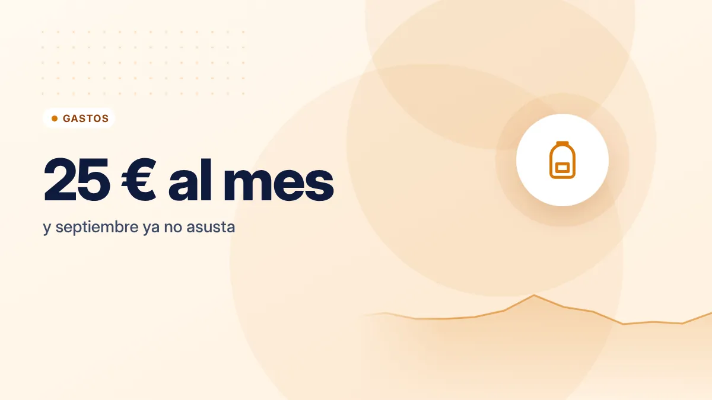

Vuelta al cole: cómo ahorrar en libros, material y uniformes
Septiembre es uno de los meses más caros para las familias. Con algo de planificación, la cuesta de septiembre puede ser mucho más suave.

Puntos clave
- Haz inventario antes de comprar: mucho material del curso anterior sirve.
- Pregunta por bancos de libros, ayudas y programas de préstamo del centro y la comunidad.
- Provisiona el gasto durante el año para que septiembre no te pille sin margen.
Empieza por el inventario
Antes de comprar nada, revisa lo que ya tienes: mochilas, estuches, calculadoras, diccionarios, ropa de deporte, material de dibujo. Muchas cosas del curso anterior están en perfecto estado. Haz una lista con lo que realmente falta.
Libros de texto
Es la partida más alta en muchas familias. Opciones para reducirla:
- Programas de préstamo o gratuidad: muchas comunidades autónomas y centros tienen sistemas de préstamo de libros. Pregunta en el colegio y en la consejería de educación de tu comunidad.
- Bancos de libros: las AMPA y algunos ayuntamientos organizan intercambios.
- Segunda mano: comprueba antes que la edición y el ISBN coinciden con los de la lista del colegio.
- Ayudas y becas: las convocatorias para material escolar y libros suelen tener plazos concretos; infórmate con tiempo.
Material escolar
- Compara precios entre papelerías, grandes superficies y tiendas online. La diferencia puede ser notable.
- Compra en grupo con otras familias del curso: los packs grandes suelen salir más baratos por unidad.
- Elige marca blanca para lo básico: lápices, folios, gomas, carpetas.
- Evita lo que no está en la lista, sobre todo el material con personajes de moda, que suele costar más.
- Reutiliza: forra cuadernos a medio usar, recarga estuches.
Uniformes y ropa
- Mercadillos de segunda mano del propio colegio o de la AMPA: los uniformes se quedan pequeños antes de gastarse.
- Compra una talla más si el niño está en pleno crecimiento, pero sin exagerar.
- Marca la ropa con el nombre: lo que se pierde también es dinero.
- Calzado: mejor uno de buena calidad y cómodo que dos baratos que duren poco.
Comedor, transporte y extraescolares
No son "vuelta al cole", pero llegan en septiembre:
- Revisa si tienes derecho a ayudas de comedor de tu comunidad o ayuntamiento.
- Elige extraescolares con cabeza: pocas y que de verdad le gusten. Muchos ayuntamientos ofrecen actividades deportivas y culturales a precios bajos.
- Pregunta por descuentos para hermanos.
Divide el gasto anual de la vuelta al cole entre 12 y apártalo cada mes en una cuenta aparte. En septiembre, el dinero ya estará ahí.
Un ejemplo de provisión
| Partida | Gasto estimado |
|---|---|
| Libros (tras préstamos o segunda mano) | 120 € |
| Material escolar | 60 € |
| Ropa y calzado | 120 € |
| Total por hijo | 300 € |
| Ahorro mensual necesario | 25 € |
Cifras orientativas: varían mucho según el curso, el centro y la comunidad autónoma.
Inclúyelo como gasto anual en tu presupuesto mensual y no te pillará por sorpresa.
Involucra a los niños
La vuelta al cole es una buena ocasión para hablar de dinero con los hijos: explicarles que hay un presupuesto, comparar precios juntos o dejarles elegir dentro de un límite. Te damos más ideas en cómo enseñar a los niños a manejar el dinero.
Fuentes consultadas
Este artículo es informativo y no constituye asesoramiento financiero, fiscal ni jurídico personalizado. Las cifras son orientativas y pueden cambiar; consulta las fuentes oficiales y, si lo necesitas, a un profesional. Cómo elaboramos nuestras guías.